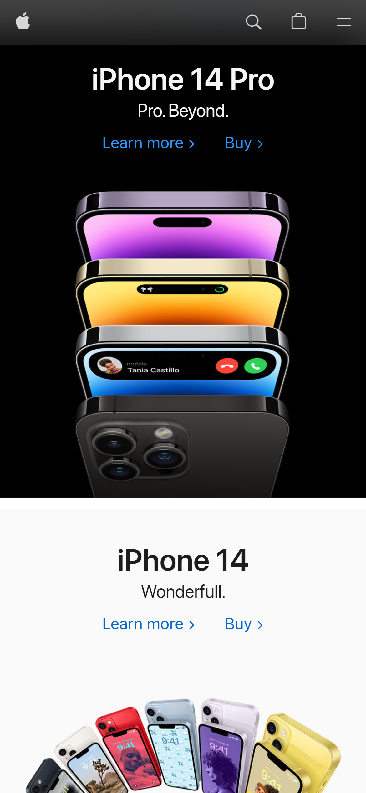

Repetition
Brandon Sanderson
I feel that this page shows good use of repetition, particularly when it comes to color. The main font color used is also the background color of the hero image, a black background that persists throughout the page, and lastly you have the nice splash of orange in the progress bar that is repeated in the font itself and the progress bars. I felt this was a good use of color repetition.
Rule of Thirds
Apple
I felt that the apple page did a wonderful job of illustrating the rule of thirds. When looking at the home page the bulk of the content is located in the middle third of the page. The text, the graphics, and the links pull your eye toward that middle third.
Use of White Space
Gabb Wireless

When I first went to the Gabb Wireless page I was struck by the clean and minimalist look that I felt. It doesn't feel very busy to me and they use softer colors and the negative space the help you feel at peace. Which as a product marketed toward parents protecting their children from the potential dangers of typical smart devices, invoking peace is probably what they are going for.